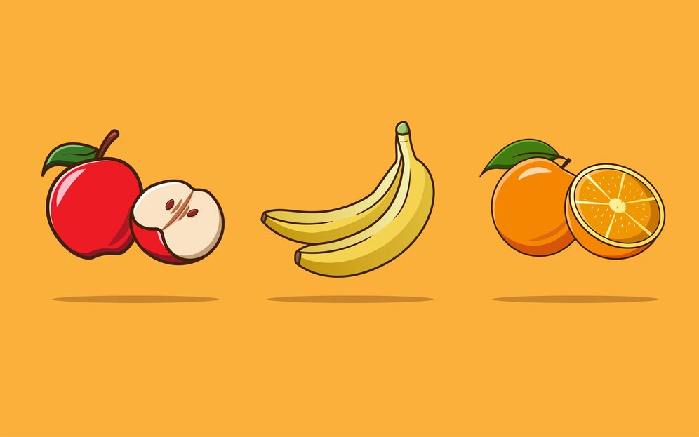

December 22, 2022
Analysis for company’s planning to reassess their budget allocation for their payroll
scheme. Figure out whether the current payroll scheme applied for a company which is
on a per-month basis, is reasonably cost-effective in terms of cost per hour.
Analysis of factors influencing consumers to participate in investing in deposit instruments offered by the company
Analysis of what factors are significant in influencing employees and it is necessary to establish a model to predict employees who stay or leave the company.

This data is shown by consumers who register and consumers who leave the company. It is important for companies to know what factors influence consumers in using their services. This analysis aims to develop a predictive model for customers who will leave the company.

The following is a fruit dataset consisting of bananas, oranges and apples. There are rotten fruit mixed among the fresh fruit, therefore a solution is needed to separate or sort fresh and rotten fruit through an automatic system to help companies streamline costs and maintain the quality of their production.
The following data is data from bank credit card consumers. There are various types of consumers that can be categorized from their behavior. From the data on consumer habits, a better approach can be taken to optimize bank services. For that, let's help the bank in conducting consumer clustering.
This project is used to forecast or predict the weather. There are indicators that can be seen as prediction references. The prediction model is made through logistic regression and SVM to see a better model